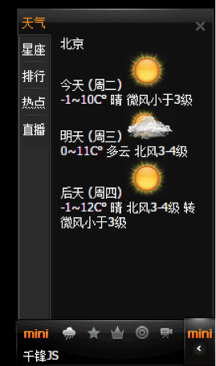
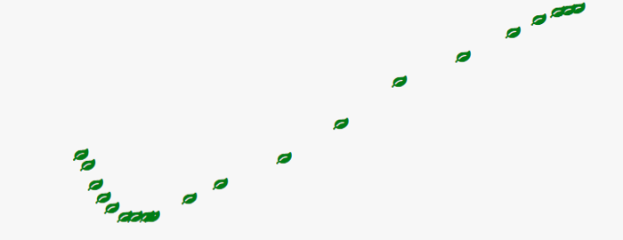
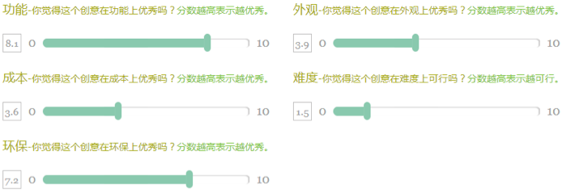

1.运动原理
运动的原理：
让某件物品沿着某种方向随着时间的变化改变位置
setInterval(function(){
obox. style.left = obox.offsetLeft+10+"px";
}, 30)
让页面中的obox元素的left值，每30毫秒，在自身left的基础上增加10像素
为什么是30毫秒呢？
因为电影播放每秒24帧，人眼就识别不出卡顿了，但是对于电脑来说，处理速度相对较快，需要每秒30帧以上才会显得流畅
2.边界处理
当元素的offsetLeft超出一定距离或到达一个边界值后，停止计时器
var timer;
ti mer = setInterval(function(){
if (obox.offsetLeft>=200){
clearInterval(timer);
} else{[
obox. style.left = obox.offsetLeft+10+"px";
}
}, 30)
当页面中的obox元素的left值大于200的时候，停止计时器
3.重力回弹
加速效果：增加重力值，随着定时器的执行，重力增大
回弹效果：当抵达目标位置时，将速度改为负值
回弹减速：将速度改变为负值的同时，除以2减半
5.抛物线～～～
6.透明度的变换
透明度的变换
其实就是获取样式的透明度，然后改变数值
1.抛物线的重力回弹
2.图片的淡入淡出
1.缓冲运动
缓冲运动
根据距离计算速度；距离和速度成正比；
速度为：(目标位置-当前位置)/10
注意：0.5px的时候会发生什么，需要向上取整，那么反方向运动呢？-0.5时向下取整
speed ＝ speed>0 ? Math.ceil(speed) : Math.floor(speed);
案例：缓冲菜单
scrollTop，传说中的流氓悬浮框
流氓悬浮框会抖
取整！
2.多元素缓冲运动函数封装
3.圆周运动
三角函数：
sin = 对边/斜边
Math.sin(Math. PI/180*reg)*r
cos = 邻边/斜边
Math.cos(Math. PI/180*reg)*r
1.侧边栏分享广告
1.缓冲运动的封装
多元素单属性运动框架的封装
运动---->边界处理---->缓冲---->单一元素同一属性缓冲---->多元素同一属性缓冲---->多元素单一不同属性缓冲----->多元素多属性缓冲--->链式
重力---->回弹---->重力回弹抛物线
圆周
折叠菜单栏

周六日综合项目：
1.掌握事件流的概念
2.掌握兼容的解决方案
3.掌握事件委托的应用场景
4.鼠标跟随特效

5.扩展案例：滑动条拖拽
